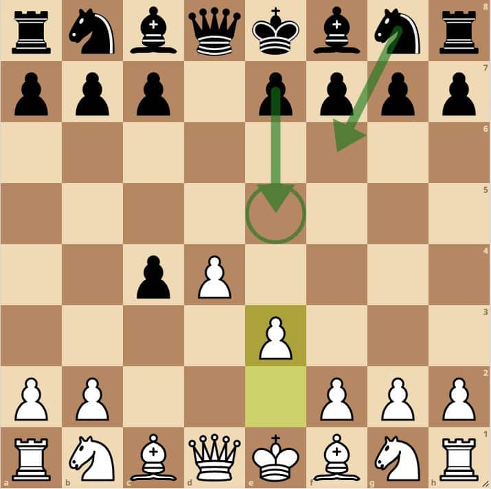

El gambito de dama es una apertura cerrada que busca controlar el centro con un sacrificio engañoso.
Comienza con los siguientes movimientos:
- d4 d5
- c4 ..
Existen dos variantes principales para el gambito de dama, el aceptado y el declinado.
Principales variantes
Gambito de Dama Aceptado
- d4 d5
- c4 dxc4
Esta variante, a pesar de perder un peón, le da la ventaja de controlar el centro. Ahora, una de las respuestas más usadas es peón e3.
- d4 d5
- c4 dxc4
- e3 e5
- ♗xc4 exd4
- exd4 ..
Con el peón e3, amenazamos al peón que se ubica en c4, pero luego de que las negras movieran peón e5, no podríamos comerlo ya que el cambio de reinas no nos conviene para un fúturo enroque, así que con el alfil capturamos al peón de c4, y tras el intercambio de peones ya podríamos desarrollar piezas y proponer el cambio de damas.
Más variantes próximamente...